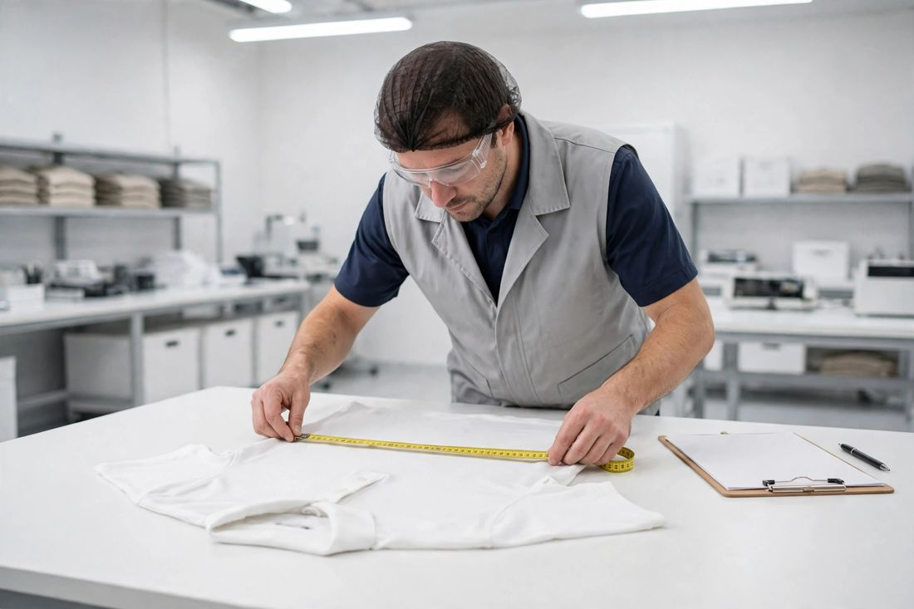

Send your order details, approved sample references and checklist points.
Our surveyor visits the factory anywhere in Pakistan and inspects on site.
Findings are photographed — goods, measurements, defects, packing and loading.
You receive a clear inspection report sheet and decide with full information.
Book an inspection before your goods ship — anywhere in Pakistan.